如何上网——关于Tsinghua Secure
清华无线校园网802.1x认证系统已正式开通，无线信号名称是“Tsinghua-Secure”。
用户只需通过校园网账号登录自服务系统（http://usereg.tsinghua.edu.cn）注册802.1x认证系统的密码，一次性配置用户终端设备（电脑、手机、PAD等），以后无需再做任何登录认证操作，直接可以上网。
使用802.1x认证系统需要进行以下两个操作步骤:
- 注册 802.1x 的密码；
- 配置用户端的设备。
详细操作说明如下:
一、注册802.1密码
-
注册密码：登录自服务系统： http://usereg.tsinghua.edu.cn，选择“ 802.1x 功能”下的“自注册及修改口令”。在密码及确认密码的区域输入密码后，点击“确定”按钮后，即注册802.1x密码成功。如下图所示： 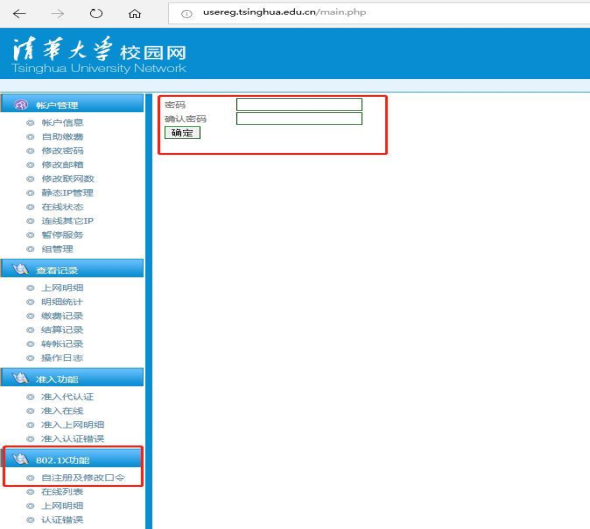
-
注意事项：为确保校园网账号安全，请勿将 802.1x 密码设置为校园网账号密码。
-
若需更改密码：登录自服务系统：http://usereg.tsinghua.edu.cn ，按照上述步骤操作。
二、配置用户端设备
用户终端设备需按不同的操作系统进行配置， Windows/Android/iOS/macOS/Linux 等不同系统下的配置方法如下:
2.1 Windows10 系统下配置 802.1x 的方法
- 确认终端在信号覆盖范围内：查找是否能找到 802.1X SSID“ Tsinghua-Secure”如果能找到则可以进行下一步。 如果找不该信号，这说明本地区不在信号覆盖范围内。
- 选择Tsinghua-Secure，点击“连接”
如下图所示：

- 输入用户名：即“校园网账号”
密码：对应账号下的802.1X密码
点击“确定”，之后继续点击“连接”


2.2 Windows 7 系统下的配置 802.1x 的方法
-
选择“控制面板”→“查看网络状态和任务”→“网络和共享中心”→“管理无线网络”→进入“管理无线网络窗口”,单击“添加”按钮；

-
设置无线网络信息：选择“手动创建网络配置文件(M)”: 网络名:Tsinghua-Secure；安全类型:WPA2-企业； 加密类型：AES；其它保持缺省配置，然后单击“下一步”，点击：“更改连接设置”；

 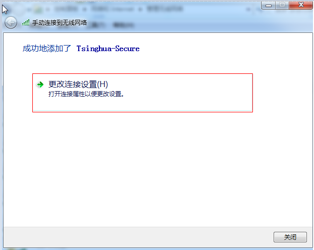
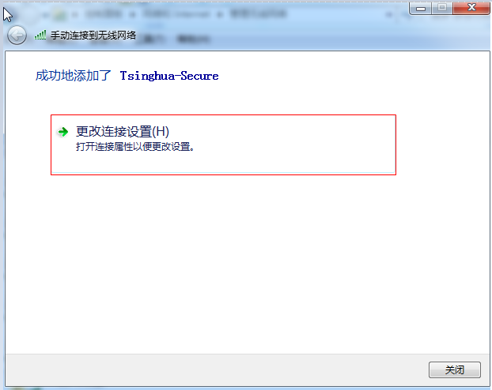 -
配置无线网络安全属性: 点击“安全”属性，按照下图中的标识进行配置：
1） 在“选择网络身份验证方法”-“设置”进入受保护的EAP属性页面

2） 取消勾选“通过验证证书来验证服务器的身份”（，选择身份验证方法中选择“安全密码（EAP-MSCHAP v2）”选项，同时保持勾选“启用快速重新连接”，点击“配置”。 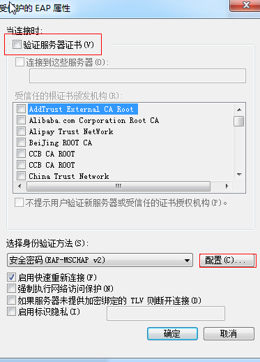
3） 在弹出的“EAP MSCHAPv2属性”界面中：取消勾选“自动使用Windows登录名和密码”。

4） 进入“高级设置”界面后，如下图，在“802.1X设置”栏下勾选“指定身份验证模式”，选择“用户或计算机身份验证”。

5） 选择“802.11设置”栏，如下图，在快速漫游栏目下取消勾选“启动成对主密钥（PMK）缓存”，点击“确定”。
 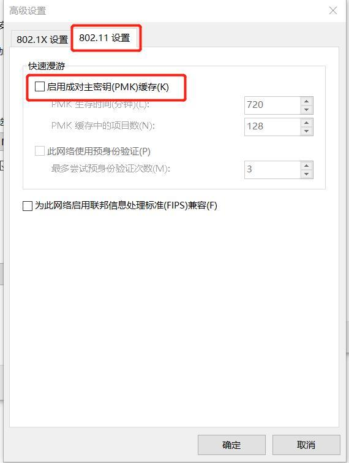
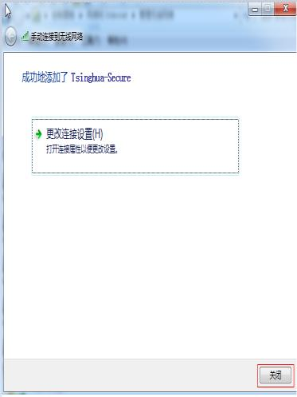
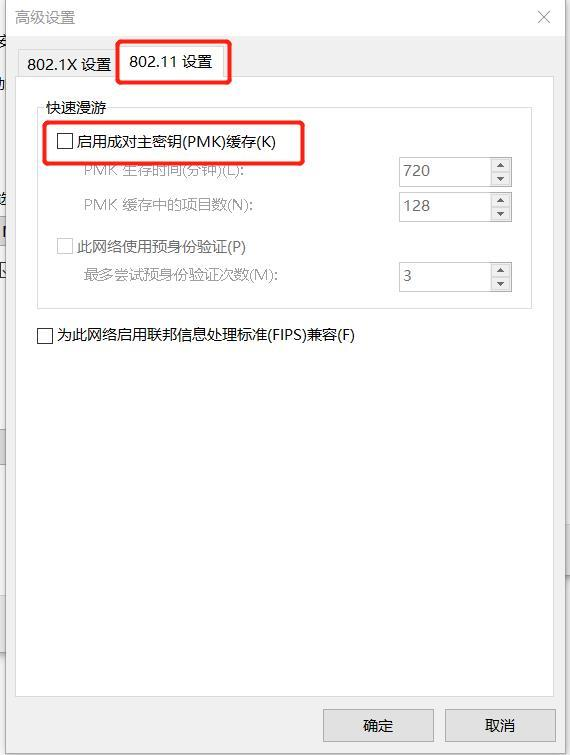
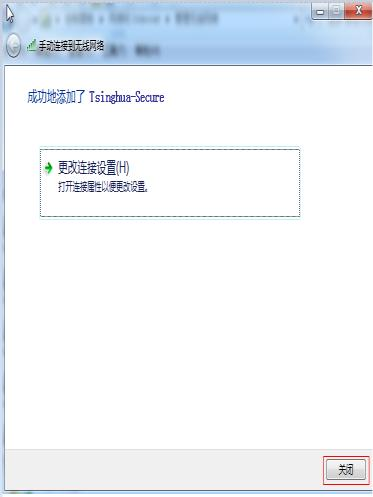
- 选择并连接 SSID 为 Tsinghua-Secure 的无线网，输入校园网账号和在usereg.tsinghua.edu.cn 中设置的 802.1x 的密码，完成连接。
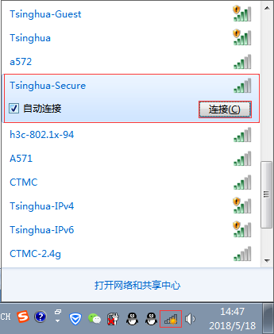

2.3 Android 系统下的配置 802.1x 的方法
-
连接 82.1X SSID Tsinghua-Secure；

-
按下图填写，身份和密码为校园网账号和在 usereg.tsinghua.edu.cn 中设置的 802.1x的口令。点击连接后完成配置。 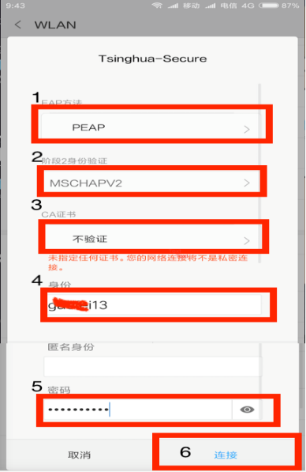
2.4 iPhone、iPad 下的配置 802.1x 的方法
-
设置---无线局域网中连接 802.1X SSID ：Tsinghua-Secure 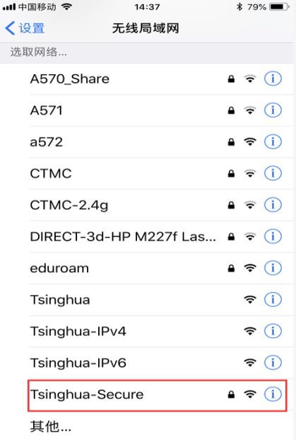
-
输入校园网账号和口令，身份和密码为校园网账号和在 usereg.tsinghua.edu.cn 中设置的 802.1x 的口令。 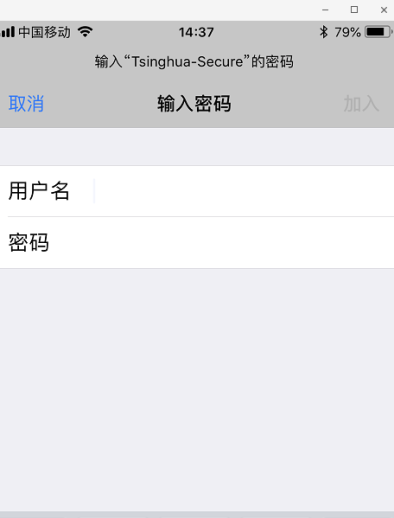
-
点击信任，首次连接会提示信任该证书，再次连接不会出现该提示。
2.5 macOS 下的配置 802.1x 的方法
-
连接 802.1X SSID: Tsinghua-Secure； 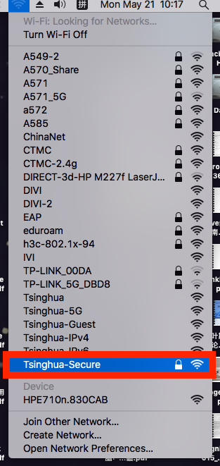
-
输入用户名密码：用户名和密码为校园网账号和在 usereg.tsinghua.edu.cn 中设置的802.1x 的口令，点击加入；

-
点击继续；

-
连接 802.1XSSID: Tsinghua-Secure 后会提示输入 MAC 主机的账号和密码（并非校园网联网账号和密码）；第一次连接时会出现，之后不再出现。输入成功后完成配置。 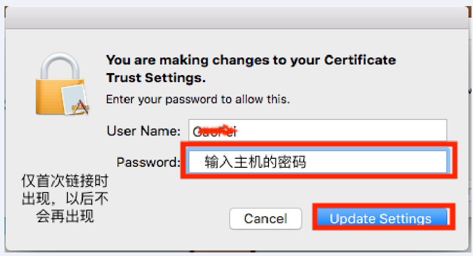
2.6 Linux 系统下配置 802.1x 的配置方法
1、以 CentOS 7.0 为例，内核版本号：Linux version 3.10.0-957.1.3.el7.x86_64
1.1、图形化连接方法：
① 点击状态栏“声音”或者“电池”的图标，然后选择“select network”：

② 选择“Tsinghua-Secure”：
③ 在弹出的输入框中，将“Authentication”选择为“Protected EAP(PEAP)”，勾选“No CA certificate is required”，“ PEAP version”选择为“Automatic” ， “Inner authentication”选择为“MSCHAPv2”，最后输入用户名、密码，即可连接成功。

1.2、命令行连接方法：
① 在 Terminal 中，通过命令“iw dev”查看无线网卡的标识：

② 通过如下命令，创建用于连接 802.1x 无线网络的配置文件：

③ 通过如下命令，查看已经存在的网络配置文件：
# nmcli connection show 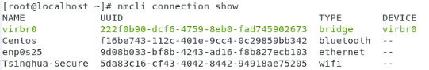
④ 通过如下命令，将刚创建的配置文件绑定到无线网卡上
# nmcli connection up Tsinghua-Secure ifname wl01
⑤ 查看是否成功连接到 802.1x 网络及网卡的 IP 地址
# nmcli connection show
# ifconfig wlo1

2、以 Ubuntu16.04 + GUI 为例
-
选择认证方式为 PEAP 类型
-
勾选不使用 CA 证书
-
内部认证选择 MSCHAPV2 类型
-
填写校园网用户名以及在 https://usereg.tsinghua.edu.cn 网站内注册的 802.1x 密码 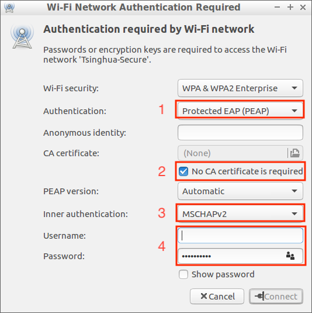
三、用户服务
使用过程中，如有问题可通过以下方式获得帮助服务：热线电话：010-62784859
接待服务：信息化技术中心用户服务大厅（李兆基大楼东2门A128室） 企业微信号：关注“清华大学信息服务”，通过网络服务选项进行咨询。
本站总访问量次